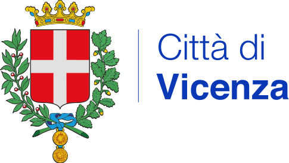
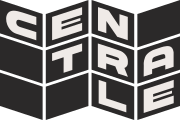
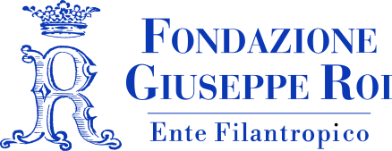
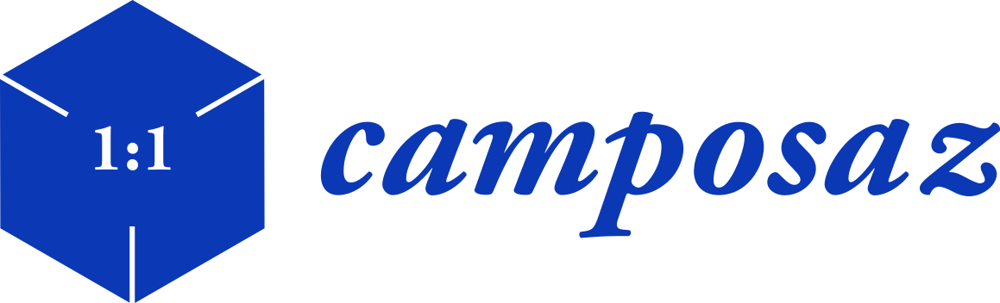
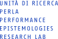

Bevete più latte
Centrale Vicenza
Via G. Medici 96/A,
Vicenza (VI)
22.05—30.06
2026
PROGRAMMA
PERFORMANCE E INCONTRI
DI ARTE CONTEMPORANEA
Call for artists
PER LA REALIZZAZIONE
DI UN'OPERA D'ARTE PUBBLICA
Invitiamo artisti, artiste e collettivi under 35 a immaginare e costruire un'opera d'arte pubblica per gli spazi esterni dell'ex Centrale del Latte di Vicenza. La call prende avvio dall'esortazione "Bevete più latte" – che attraversa la programmazione culturale della Centrale e rilegge l'immaginario produttivo del luogo – assumendo il latte come metafora di cura pubblica: una materia che nutre e sostiene la vita comune, ma che allo stesso tempo definisce soglie, modelli e forme di organizzazione dello spazio collettivo.
In questo orizzonte, l'opera è intesa come un dispositivo di anticipazione: una forma capace di rendere visibili e praticabili scenari ancora in divenire. Più che inserirsi nello spazio, è chiamata a trasformarlo, attivando nuove relazioni, usi e modalità di attraversamento.
La call privilegia proposte che lavorino sull'accessibilità, sulla pluralità dei pubblici e su forme di fruizione non gerarchiche, contribuendo a costruire uno spazio aperto, condiviso e continuamente ridefinito.
L'intervento diventa così parte di un processo più ampio: un campo di sperimentazione in cui pratiche artistiche, immaginazione e uso collettivo si intrecciano, dando forma — nel presente — alle condizioni di convivenza del futuro.
INVIA UNA MAIL A
↗ extragarbo@gmail.com
ENTRO IL 28.05.2026
↗ SCARICA QUI LA CALL COMPLETA
Residenza con Camposaz
"COSTRUIRE CENTRALE"
22—31 maggio 2026
Durante questo workshop di 10 giorni con il collettivo Camposaz, daremo nuova vita agli spazi esterni della Centrale, in particolare lavorando sulla piazza principale. Obiettivo della residenza è trasformare quest'area in un "palcoscenico urbano" versatile: un luogo per eventi e spettacoli, ma anche un giardino accogliente dove le persone possano incontrarsi, socializzare, trovare ombra e godere dell'atmosfera comunitaria.
Durante il workshop l3 partecipanti progetteranno e costruiranno una o più installazioni in legno, seguendo le suggestioni fornite dagli organizzatori e dal luogo stesso, attraverso l'osservazione e la percezione del paesaggio e l'ascolto dei suoi abitanti. Durante il workshop si dormirà in tenda o all'interno della Centrale. Tutti i pasti saranno forniti dall'organizzazione.
WORKSHOP GRATUITO (MAX 12 PARTECIPANTI)
↗ COMPILA QUI IL FORM PER ISCRIVERTI
PER ULTERIORI INFORMAZIONI SCRIVERE A
↗ vicenza2026@camposaz.com
Royal Divorce
Wicked Game to Play
Wicked Game to Play è un laboratorio sperimentale di avvicinamento alle arti performative. Royal Divorce coinvolge un gruppo eterogeneo di partecipanti nell'immaginazione e nella costruzione di un evento collettivo, attraversando i linguaggi della performance, dell'happening e dell'installazione. Il percorso si sviluppa come pratica processuale e partecipativa, attenta al contesto e orientata ad attivare nuove possibilità per la Centrale, trasformandone l'apertura in un momento di azione condivisa e immaginazione concreta.
Al centro del laboratorio c'è la celebrazione, intesa come forma da reinventare. L'evento emerge lungo il processo come esito aperto di incontri, sperimentazioni e negoziazioni, fino a configurarsi come un rituale collettivo situato. La costruzione di una festa diventa così un modo per ripensare la cerimonia come dispositivo contemporaneo, capace di accogliere una pluralità di sguardi e modalità di partecipazione.
Guidati da Royal Divorce, i partecipanti attraversano un percorso di regia condivisa in cui l'autorialità si distribuisce e la creazione artistica si definisce come pratica collettiva. Tra ironia e desiderio di credere ai propri incantesimi, il laboratorio apre uno spazio in cui immaginazione e azione si intrecciano, dando forma a un'esperienza comune.
Royal Divorce è un collettivo nato nel 2023 dalla collaborazione tra gli artisti Teresa Barbagallo, Angelo Licciardello e Sebastiano Sicurezza. Seguendo una logica visiva legata alle immagini di scarto e al loro potere hauntologico, Royal Divorce si muove nella crisi sistemica della rappresentazione, nello scontro tra l'archivio storico e quello digitale, scatenando paesaggi che vivono al limite tra l'installazione visiva e la performance. Le immagini e i testi amatoriali provenienti dal web diventano un veicolo drammaturgico per esplorare l'impatto che gli archivi digitali producono sull'immaginario collettivo e individuale.
IL LABORATORIO SI SVOLGE IL 3, 10, 19 E 25 GIUGNO 2026, DALLE ORE 14.00 ALLE 19.00. L'EVENTO FINALE DI PRESENTAZIONE APERTO AL PUBBLICO SI TERRÀ IL 30 GIUGNO.
↗ COMPILA QUI IL FORM PER ISCRIVERTI
Antonio Tagliarini
Pairadaeza
A seguire incontro PERLa con Antonio Tagliarini e Bruna Bonanno.
Pairadaëza prende il nome dall'antico termine persiano da cui deriva "paradiso", inteso come giardino recintato, spazio separato e carico di immaginazione. Il progetto si rivolge a luoghi "a rischio" — giardini, parchi pubblici, siti naturali anche marginali — per riattivarne la dimensione invisibile, fatta di storie, stratificazioni e presenze. Ogni intervento si configura come site-specific, modellato sulle caratteristiche storiche, botaniche e morfologiche del contesto.
Il lavoro di Tagliarini attraversa il luogo con un doppio sguardo: da un lato analitico, attento alla sua composizione materiale; dall'altro aperto a una dimensione immaginativa e relazionale. Accanto allo studio del paesaggio, emergono racconti, memorie e leggende raccolte da chi lo abita e lo cura. Il giardino diventa così uno spazio in cui visibile e invisibile si intrecciano.
Attraverso una narrazione che intreccia queste storie alla propria esperienza, l'artista accoglie il pubblico in un ambiente in cui realtà e immaginazione coesistono. L'esperienza si apre a una dimensione partecipativa, invitando i presenti a esplorare il luogo e a immaginare insieme possibili trasformazioni.
Pairadaëza costruisce una comunità temporanea attorno a un gesto condiviso, attivando il paesaggio come spazio di relazione e proiezione. Il giardino si configura così come figura concreta e simbolica insieme per pensare il presente e immaginare, collettivamente, altre forme di abitare.
Autore, regista, performer e danzatore, Antonio Tagliarini sviluppa una pratica scenica radicata nella danza contemporanea e nella performing art, che continua a orientare il suo lavoro anche nell'ambito teatrale. La sua ricerca si muove tra coreografia, drammaturgia e formati ibridi, con una particolare attenzione alla relazione tra corpo, spazio e narrazione.
È autore e interprete di spettacoli e performance presentati in contesti nazionali e internazionali, tra cui La foresta trabocca (Triennale Milano, 2024), Pairadaëza (Danae Festival, 2024), Paesaggi condivisi (ZONA K e Piccolo Teatro, 2024) e Un'andatura storta ed esuberante (FOG – Triennale Milano, 2023). Tra i lavori precedenti: a walk in a supermarket (con Rimini Protokoll, 2021), Show (2007, Premio BE Festival 2014), Titolo provvisorio: senza titolo (2005) e Freezy (2003).
Nel 2008 fonda con Daria Deflorian la compagnia Deflorian/Tagliarini, attiva fino al 2022, con cui realizza spettacoli, progetti formativi e interventi site-specific presentati in importanti festival e teatri europei. Tra i riconoscimenti: Premio Ubu (2014), Premio della critica in Québec (2015), Premio Riccione per la drammaturgia (2019) e Premio Hystrio (2021).
Nel corso della sua carriera ha collaborato con artisti e compagnie internazionali, tra cui Miguel Pereira, Idoia Zabaleta, Ambra Senatore e Rimini Protokoll, e ha preso parte a piattaforme di ricerca come APAP, Sites of Imagination e Pointe To Point Asia-Europe Dance Forum. Parallelamente conduce attività pedagogiche, tra masterclass, laboratori e progetti di tutoraggio.
Jérôme Bel
Laura Pante
A seguire incontro PERLa con Laura Pante, Alessia Prati e Maria Paola Zedda.
"Nel 2019 - per motivi di sostenibilità ambientale - io e i miei collaboratori abbiamo smesso di prendere l'aereo. Invece di viaggiare, ho iniziato a contemplare nuove pratiche coreografiche, come il riallestimento di due produzioni della compagnia, The Show Must Go on e Gala, con cast e assistenti tutti scelti a livello locale.
Desideravo continuare su questa strada e iniziare a scrivere partiture di danza per solisti che fossero di per sé eloquenti, in modo da non dover incontrare direttamente gli interpreti. E poi, mentre stavo creando le partiture, il Coronavirus ha iniziato a diffondersi in tutto il mondo, con grande rapidità.
Questo progetto è diventato allora ancora più urgente e necessario, proprio mentre i teatri di tutto il mondo chiudono, uno dopo l'altro.
Su invito del CSS, ho realizzato un esperimento coreografico con e per la danzatrice Laura Pante" — Jérôme Bel
Jérôme Bel è un coreografo francese e uno dei protagonisti indiscussi della scena internazionale contemporanea. Con le sue prime creazioni (name given by the author, Jérôme Bel, Shirtology...), Jérôme Bel ha iniziato ad applicare principi strutturali alla danza per mettere in primo piano gli elementi primari dello spettacolo teatrale. Il suo interesse si è poi spostato sulla questione del performer come individuo unico e particolare. La serie di ritratti di danzatori affronta così la danza attraverso la narrazione di chi la pratica.
Si è anche spesso interrogato su ciò che il teatro può essere in senso politico (The show must go on, Disabled Theater, Gala…). Nell'offrire il palcoscenico a performer non tradizionali (dilettanti, persone con handicap fisici e mentali, bambini...) ha mostrato una chiara preferenza per la comunità delle differenze, dove il desiderio di danzare prevale sulla coreografia fine a sé stessa, in un processo di emancipazione attraverso l'arte.
Laura Pante è danzatrice e ricercatrice di teorie e pratiche del teatro. Laureata in Arti Visive presso l'Università IUAV di Venezia, da ottobre 2020 è dottoranda nello stesso ateneo. Nel 2019 conclude un periodo di ricerca artistica presso APASS (Advanced Performance and Scenographic Studies) a Bruxelles. Il suo studio si concentra sull'analisi delle relazioni politiche tra pensiero e movimento proprie delle tecniche corporee utilizzate da coreograf* contemporane*.
La sua ricerca artistica si attualizza attraverso dispositivi coreografici, progetti performativi, curatoriali, pedagogici e di scrittura in cui sono i saperi del corpo a stimolare nuovi discorsi teorici e a incentivare lo sviluppo di pratiche transdisciplinari. In questi anni è in scena come danzatrice per Jérôme Bel, Romeo Castellucci, Cindy Van Acker, Silvia Costa, Compagnia Abbondanza Bertoni, e come performer per le artiste visive Anna Franceschini e Alexis Blake; dal 2012 lavora per il fotografo Dido Fontana. Studia con Cristina Kristal Rizzo, Meg Stuart, Gisèle Vienne, Xavier LeRoy, Yasmine Hugonnet, Raffaella Giordano, Leonardo DeLogu. Nel 2016 ha completato la formazione in Danza Sensibile c, tecnica somatico/osteopatica diretta dal danzatore e pedagogo Claude Coldy, attualmente studia come istruttrice di Hatha Yoga presso la scuola "I vasi comunicanti" diretta dalla danzatrice Francesca Proia.
Francesca Sarteanesi
Almeno Nevicasse
Almeno Nevicasse è un laboratorio che raccoglie e trasforma parole, espressioni e pensieri, intrecciando linguaggi personali, popolari e locali. Al centro del percorso c'è la forza espressiva della parola, intesa come materia viva da ascoltare, attraversare e riscrivere.
Il laboratorio si sviluppa in tre momenti. Il primo giorno è dedicato alla ricerca drammaturgica: attraverso interviste, esercizi e pratiche di ascolto, i partecipanti sono invitati a esplorare la propria esperienza, i luoghi che abitano, le passioni presenti e quelle lasciate in sospeso. Da questo processo emerge un proprio "Almeno Nevicasse", una traccia personale da sviluppare.
Il secondo giorno è dedicato all'azione. A partire dai materiali emersi, ogni partecipante interviene su uno o più maglioni usati, ricamando parole, frasi o segni. Il gesto del ricamo diventa pratica condivisa: un tempo collettivo in cui le storie prendono forma e si depositano su un supporto concreto, costruendo una narrazione plurale.
Il terzo giorno prende forma una restituzione pubblica. I maglioni vengono indossati e attivati nello spazio come opere viventi, dando luogo a una scena in movimento: una sfilata che si configura come racconto collettivo, capace di intrecciarsi con il luogo e di renderlo attraversabile da nuove presenze e significati.
Ai partecipanti è richiesto di portare uno o due maglioni usati; verrà fornito un kit con carta, penna, ago e fili. Il laboratorio è aperto a tutte le persone, senza necessità di esperienza. La partecipazione alla restituzione finale è facoltativa.
Francesca Sarteanesi nasce a Prato nel 1980. Dopo il diploma artistico si laurea in Discipline dello spettacolo all'Università di Bologna. Nel 2006 fonda la compagnia Gli Omini con la quale lavora fino al 2018. Con la compagnia produce diversi spettacoli che girano in Festival e teatri di tutta Italia. Al lavoro di attrice e autrice affianca una intensa attività artistica e performativa esponendo in gallerie e spazi culturali.
Nel 2018 crea la linea Almeno Nevicasse, una serie di maglioni ricamati a mano con scritte che isolano espressioni del linguaggio popolare mettendo in risalto tutta la forza espressiva della parola.
Nel 2019 debutta un nuovo spettacolo, Bella Bestia, prodotto da Officine della Cultura e sostenuto da Armunia. Nel 2020 debutta con lo spettacolo Sergio, coprodotto da Gli Scarti e Kronoteatro. Candidata come miglior attrice al premio Ubu 2021.
IL LABORATORIO SI SVOLGE NEI GIORNI 15, 16 E 17 GIUGNO 2026, DALLE ORE 14.00 ALLE 19.00.
↗ COMPILA QUI IL FORM PER ISCRIVERTI
Chiara Bersani
Seeking Unicorns
A seguire incontro PERLa con Chiara Bersani, Giulia Traversi, Dalila D’Amico ed Edoardo Lazzari per la presentazione di ↗ Prima di ogni cosa. Per un futuro Crip (Luca Sossella Editore, 2026)
Io, Chiara Bersani, alta 98 cm, mi autoproclamo carne, muscoli e ossa dell’Unicorno. Non conoscendo il suo cuore proverò a dargli il mio il respiro, miei gli occhi. Di lui raccoglierò l’immagine, ne farò un costume destinato a diventare prima armatura poi pelle. Nel dialogo tra la mia forma che agisce e la sua che veste, scopriremo i nostri movimenti, i baci, i saluti, gli sbadigli. Io, Chiara Bersani, 32 anni, mi assumo la responsabilità di accogliere il suo smarrimento centenario. Dichiaro di essere pronta a donare fiato alle domande universali che l’hanno attraversato: “Perché esisto?” “Da dove vengo?” “Se domani mattina mi trovaste nel vostro giardino, cosa pensereste?” “Sono buono o cattivo?” “Credo in dio o sono io Dio?” e ancora “Dov’è il mio amore?” “Chi l’ha ucciso?” “Perché, ora che ho raggiunto il punto più umiliante della mia vecchiaia diventando solo un cavallo cornuto a cui escono arcobaleni dal sedere, non posso scegliere di morire?”
Dell’unicorno non si sa nulla. Le sue radici si sono perse nel susseguirsi di generazioni di esseri umani distratti. Forse tutto è nato da un fraintendimento, dall’interpretazione sbagliata di manufatti coniati in India durante l’Età del Bronzo. Cosa succede se nell’immaginario collettivo appare una figura dai tratti mitologici eppure orfana di un mito che ne motivi e descriva l’esistenza? Nasce un simbolo. Fragile. Sradicato. Perfetta vittima sacrificale per chiunque desideri riempirlo di significati.
Seeking Unicorns è la versione per gli spazi non teatrali di Gentle Unicorn, opera manifesto di Chiara Bersani. L’ambiente sonoro site-specific amplifica l’ascolto e i sensi, allenando lo sguardo, conferendo nuova luce e storia a quei luoghi che chiedono di essere riabitati. L’Unicorno, qui, diventa la sembianza fisica e immaginifica su cui declinare il concetto di Corpo Politico, centrale nel percorso artistico dell’artista, in cui il corpo non è più, soltanto, testimonianza di una storia vissuta ma entità politica, resa tale dall’incontro/scontro con la società.
Chiara Bersani è una performer, autrice e regista/coreografa italiana attiva nell’ambito delle arti performative, del teatro e della danza contemporanea. La sua ricerca come interprete e autrice si basa sul concetto di Corpo Politico e sulla creazione di pratiche dedicate a sondare le soglie dell’attenzione e le soglie della presenza. La performance Gentle Unicorn è stata inserita nel circuito Aerowaves. Nel 2018 le viene attribuito il Premio UBU 2018 come “Miglior nuova attrice/performer under 35”. Nell’agosto 2019, durante l’Edimburgh Fringe Festival, Gentle Unicorn e Chiara Bersani vincono il primo premio per la categoria danza del Total Theatre Awards. Chiara Bersani è artista sostenuta dal circuito Apap – Advancing Performing arts project – Feminist Future fino al 2024.
Royal Divorce
Cerimoniale
Cerimoniale è l'esito pubblico del laboratorio Wicked Game to Play condotto da Royal Divorce. Un evento collettivo che prende forma come rito contemporaneo, nato da un processo condiviso di immaginazione, sperimentazione e negoziazione.
I linguaggi della performance, dell'happening e dell'installazione, Cerimoniale trasforma la celebrazione in una pratica attiva: una festa costruita insieme, in cui gesto, presenza e relazione diventano elementi centrali. L'evento non si presenta come forma chiusa, ma come dispositivo aperto, capace di accogliere e mettere in tensione visioni, desideri e possibilità emerse durante il laboratorio.
Le partecipanti, autori e interpreti del processo, attivano lo spazio attraverso azioni, immagini e situazioni che si sviluppano in tempo reale, dando luogo a un rituale collettivo situato. La cerimonia si costruisce così come esperienza condivisa, in cui il pubblico è invitato a prendere parte a un momento di trasformazione, sospeso tra realtà e immaginazione.
Cerimoniale segna l'apertura della Centrale come spazio di relazione e possibilità: un atto di passaggio che ne attiva il presente e ne proietta il futuro.
Bevete più latte
Centrale Vicenza
Via G. Medici 96/A,
Vicenza (VI)
22.05—30.06
2026
BEVETE PIU' LATTE
Centrale Vicenza
22.05—30.06 2026
"Bevete più latte" appartiene alla memoria collettiva italiana, è un'esortazione semplice, legata all'educazione pubblica che ha veicolato un'idea condivisa di salute e benessere. Nel programma immaginato all'interno del percorso di riattivazione dell'ex Centrale, il latte diventa una figura della cura pubblica — ciò che nutre e rende possibile la vita comune — e insieme introduce soglie e modelli dello stare insieme.
Il progetto si muove dentro un immaginario preciso: quello della scritta omonima in Boccaccio '70, nell'episodio Le tentazioni del dottor Antonio di Federico Fellini. Qui la scritta pubblicitaria agisce come una presenza che irrompe nello spazio urbano, cresce, si anima, produce attrazione e disorientamento. Attorno ad essa si genera movimento, una coreografia della città.
La Centrale si trasforma sempre di più in spazio pubblico di sperimentazione e relazione, in dialogo con la propria storia produttiva e orientata al presente. Le arti performative e visive operano come pratiche che rendono sensibili le condizioni dello stare insieme, lavorando sui corpi e sulla loro presenza. Attivano situazioni da attraversare e costruiscono esperienze condivise di spazio e tempo.
Come il latte, anche lo spazio culturale si configura come una materia in circolazione: si trasforma attraverso usi, presenze e ritmi. Il programma privilegia formati accessibili, durate brevi e modalità informali di incontro, mettendo al centro la dimensione processuale della scena. L'accessibilità costituisce l'infrastruttura del progetto, riguarda le soglie di ingresso, i linguaggi, i tempi di fruizione e la pluralità.
Il progetto assume il futuro dello spazio come parte integrante del suo desiderio. La ex Centrale è un luogo in divenire, il cui destino prende forma attraverso pratiche, usi e immaginazioni. Le arti nella loro eterogeneità agiscono come dispositivi di anticipazione, attivano scenari possibili, li mettono alla prova nel presente e ne verificano le condizioni di esistenza.
Il progetto si configura come un esercizio di immaginazione pubblica: una pratica collettiva che interroga ciò che questo luogo può diventare, per chi e secondo quali forme di convivenza. Il futuro emerge come effetto di una molteplicità di gesti, presenze e relazioni.
Bevete più latte è un progetto di
Comune di Vicenza Centrale Vicenza


Realizzato all'interno del percorso
di attivazione temporanea "La Centrale delle Idee"
A cura di
Edoardo Lazzari / Extragarbo
In collaborazione con
Fondazione Roi Camposaz PERLa



Produzione
Naomi Pedri Stocco / EST Educazione Società Territori
Silvia Crosara / ARCI Servizio Civile Vicenza
Amministrazione e produzione esecutiva per Extragarbo
Giusy Guadagno
Supporto tecnico e allestimenti
Cosimo Ferrigolo
Identità visiva
moderata fonte
(Rebecca Bertero + Serena De Mola)
Seguici su
@centrale.vicenza